|
|
|
|
СТИЛЕФОРМИРУЮЩАЯ МЕГАМАШИНА
|
|
"Голос ПГ"
|
|
28.12.09
Приглашаем анархисток от 16 до 25 лет принять участие в создании новой поп-группы. Творческие ориентиры - "Виа Гра", "Стрелки", "Блестящие". Мы должны принести дух, букву, запах и вкус анархии на лавочки к лузгающим семечки пацанам, в тонированные и тюнингованные тачилы молодых мегаполисных пролетариев, в курилки офисов контор, продающих стиральный порошок оптом, на танцполы самых ссаных дискотек этой страны. Вперед, к славе и либертарной победе! Желающие присылайте свои демотрэки и видосы нам на адрес pg@pop-grafika.net.
5.10.09

Последний выпуск Альманаха ПГ - "Мы вышли из дома" - теперь можно прочитать и скачать с сайта.
21.09.09

Новая серия ПГ-постеров "Сомали уже здесь"
11.06.09
Коллектив «Агенда» и группа «ПГ» представляют:
"Агенда: перепрограммировать анархизм"
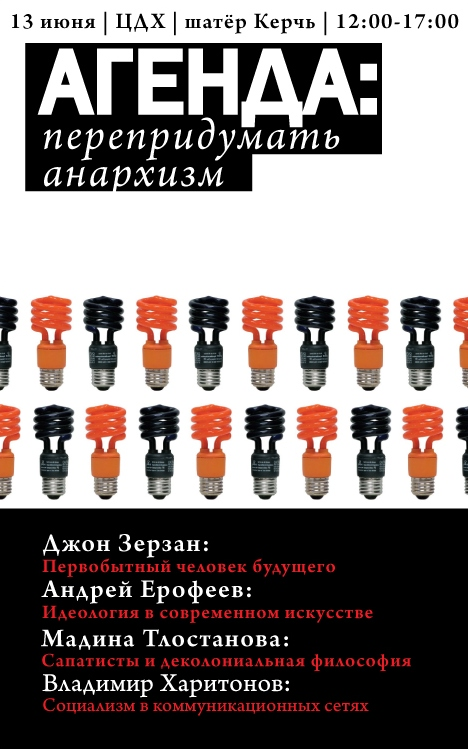
Анархизм – отличная идея – мир свободных людей, где в качестве основы социального взаимодействия лежат кооперация и солидарность. Никаких войн, никаких мусоров, никаких боссов – независимые гипердемократичные коммуны крестьян, художников и изобретателей. Одно удручает – всё, что выглядело таким реально возможным в девятнадцатом - начале двадцатого века, сегодня обратилось в милый, но неубедительный наивняк. Не то что бы люди перестали помогать друг другу, бороться против власти, хотеть свободы и равноправия – наоборот, если оглянуться, мы увидим множество горизонтальных сетей и очагов сопротивления. Но в аспекте современной техногенной, урбанистической цивилизации, где общество пронизывает необъятное количество социальных конструктов и систем отношений, ставших такими очевидными под пристальным взглядом критических теорий, визионерские анархо-проекты более не выглядят убедительными. И тем не менее нет смысла отказываться от утопического – любой проект – это по сути утопия, а его воплощение зависит от увлечённости и адекватности «проектёров». Хотя, возможно, «проект» – не лучшая формулировка, ведь анархизм это не модель, и даже не теоретическая система. Анархизм – это скорее ряд этических императивов, а также процесс движения по этим базисным принципам к обществу, где они будут играть главную роль. Но чтобы двигаться эффективней – надо рассмотреть окружающую действительность. Именно желание обозреть окружающий нас мир в надежде найти основу для нового анархического проектирования является причиной нашего мероприятия. В рамках него мы решили сосредоточиться на ряде неочевидных теоретических площадок, по нашему мнению пригодных для обновления антиавторитарного проекта.
Джон Зерзан
Первобытный человек будущего
Андрей Ерофеев
Идеология в современном искусстве
Мадина Тлостанова
Сапатисты и деколониальная философия
Владимир Харитонов
Социализм в коммуникационных сетях
В рамках Московского.книжного фестиваля
13 июня, ЦДХ, 12.00 – 17.00
Коллектив "Агенда" и Группа "ПГ"
28.04.09
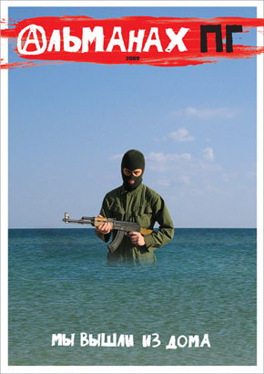
30-е апреля с 19 до 23 ч.
Первая из серии презентаций альманаха ПГ.
В программе:
либертарные танцульки, диджеи, виджеи, алкобар и дистро.
Участвуют:
dj Дрипс, vj ДБ и др.
Метро Бауманская, Фабрика, двор.
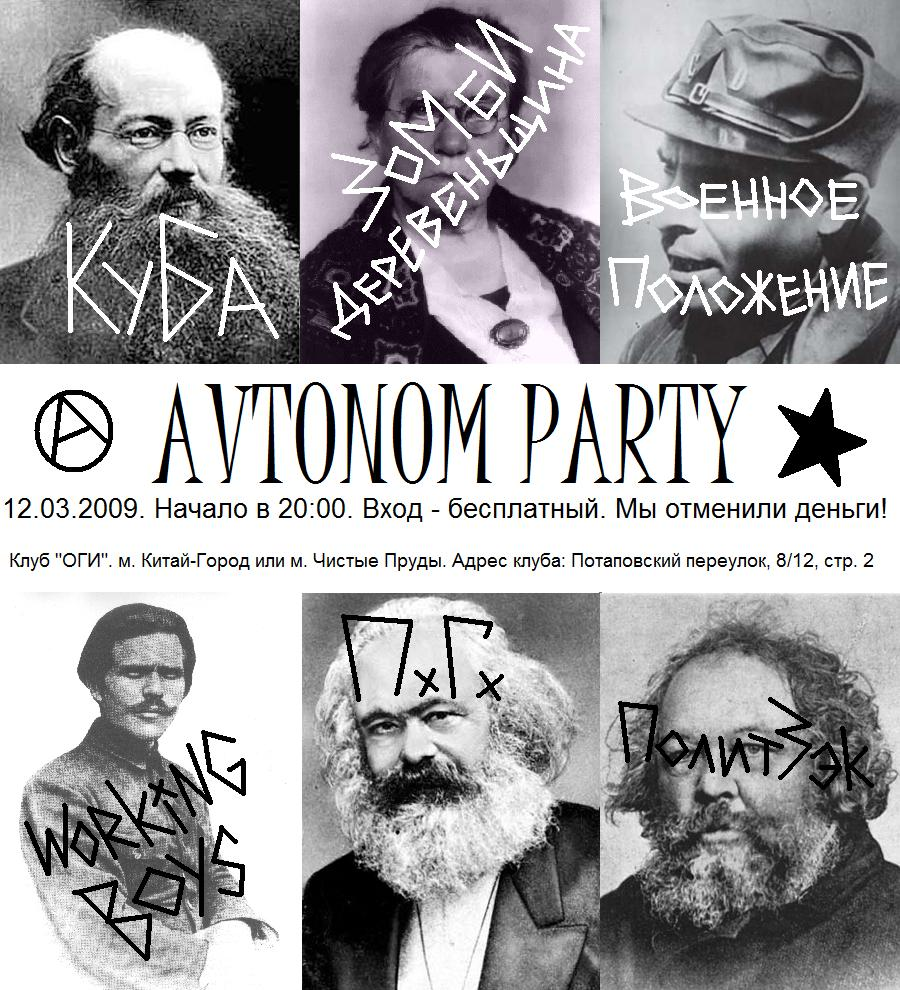
11.02.09
12.02 ч-г 20.00 Автоном-party:
В эпоху, когда самиздатчики перенесли большинство своих проектов в Интернет, "Автоном" сохраняет верность бумаге. "Автоном" - анархистский альманах, поднимающий широкий круг активистских, социальных, исторических и культурных тем. "Автоном" - одно из немногих изданий, в котором осталось, что читать! Журнал можно круглогодично приобрести в книжном магазине О.Г.И.
Участвуют:
Red Neckzombie, Working Boys, ПГ Граната, Военное положение, Политзек, Куба.
+
Видеопрограмма.
Специально к программе новый клип
"Дядя" группы ПГ.
Вход: бесплатно.
Адрес: клуб О.Г.И..
16.12.08 КОНЕЦ КРИТИЧЕСКОГО ДИСКУРСА
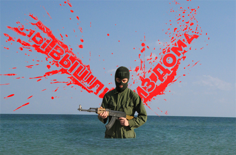
Либеральная интеллигенция величает себя «левым дискурсом» и ищет врага. Врагом оказывается ярый дугинец художник Беляев-Гинтовт, получивший премию Кандинского в номинации «проект года». Арт-критик Панов незадолго до объявления результатов уверял, что уйдет из профессии, если премию дадут фашисту Гинтовту. Интересно, уйдет ли? При входе в зал арт-центра Винзавод, где вручают премию, дугинцы колошматят троцкистов, устроивших пикет против премии. Все бьются за место под солнцем. Абстрактно-формальное искусство осталось за бортом. Конец привычного для арт-общественности мира.
/читать дальше/
25.11.08 16.12 вт. 21.00 RUSSIAN MULTIMEDIA AVANGARD
Для любителей авангарда и людей, стремящихся понять, что же происходит во время кризиса с властью и обществом выступят Kruzr Ken, ЗОМБИДЕРЕВЕНЩИНА (RED NECKZOMBIE) и художественно-музыкально-анархическая группировка ПГ. Kruzr Ken – один из множества проектов музыкальной тусовки, создавшей «Я слева сверху», «Усы»... и выступающей в шумовом авангарде московской инди-сцены. ЗОМБИДЕРЕВЕНЩИНА – грубые дед-металл парни и девчонка со столичных окраин Москвы и Парижа. Интеллектуалы, поднабравшиеся сленга на улице и полюбившие всем сердцем Napalm Death. Дикие рифмы, жесткие ритмы, флейта и жуткие гитарные рифы заставят вас понять, что такое актуальная архаика. Художники группы ПГ, по мнению бывшего министра культуры, недавно опозорили Россию участием в парижской выставке современного искусства «Соц-арт». Чаще они показывают свои музыкальные клипы и мультимедийные инсталляции в галереях и музеях, но в этот раз зачтут свои терки и покажут видео на сцене, вместе с экспериментальными музыкантами. Мы считаем сложившееся в представлениях публики разделение видов искусств случайным историческим недоразумением. Наша задача – его развеять.
Адрес: клуб "Икра".
29.10.08 Новый пг-клип
здесь.
19.10.08
26.08.08
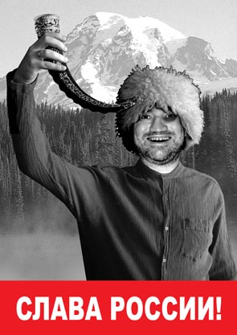
08.08.08 OFF PROGRAM
Получив приглашение от организаторов фестиваля актуального искусства в Веретьево приехать на открытие, мы (я, Рада и Вован) решили им воспользоваться. Дорога туда заняла около 3 часов по вине многочисленных дачников, умело блокировавших все выезды из города.
Километрах в десяти до места мне приспичило почитать книжек. Книжки были неплохими, чувства обострились, и в приподнятом состоянии я проник на арт-территорию.
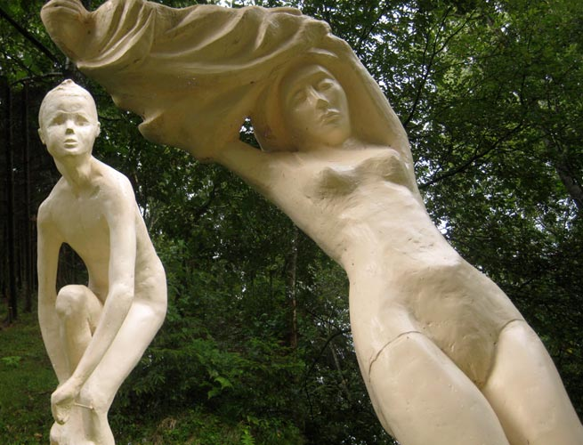Первое, что я увидел, привело меня в восторг. Это была композиция, состоящая из трехметровой скульптуры мальчика-футболиста, снимающего трусы при виде пятиметровой раздевающейся девочки-пловчихи! Все это сработано утонченно-гротескно-грубовато, словно мастера, выполняющие заказы Кунса, делали русскую версию и слегка халтурили. /читать дальше/
10.06.08 Новый трек - про
вампира и банкира.
07.05.08
Видео-хуидео про кентавра Китовраса и царя пидораса.
14.07.07 Тема
веры, надежды и любви в пг-творчестве.
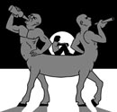
05.07.07 Радостная новость. Проект «Поп-Группа Двери» закончил свое существование. Вместо него запущен новый проект «Поп-Группа Дрели». Проект «Поп-Группа Дрели» ничем не отличается от проекта «Поп-Группа Двери», только песни стали еще хуже. Первый трек нового проекта можно пиздануть здесь.
05.07.07 В последнее время нас часто спрашивают, кто мы такие и за что стоим. «Мы же серьезные ребята», - отвечаем мы. Поэтому мы за серьезные понятия. Наши понятия заключаются в том, что надо бить всех тех, кто стоит на серьезных понятиях. В том числе и самих себя. Увидел себя ссука в зеркало – бей. Бей нещадно, зубы из глаз, кровь из ушей. Бей, пока не вышибешь разум на волю. Успеха.
29.08.06 Еще новая видеохуйня - Вокзалы.
28.07.06 29.07 суб. "Поп-группа Двери" выступит на опенэйре Goa Gil & Ariane .
11.07.06 12.07 ср. 21.00 LeftWing Promo Group и инди-лейбл Noizer представляют:
Мероприятие Dead8 является культурным ответом официальным событиям,
приуроченным к саммиту большой восьмерки (G8), таким как фестивали "Live8" и "Stop контрафакт", прошедшие в прошлом и нынешнем годах. В этих
фестивалях принимали участие поп-культурные идолы, символы глобальной
монокультуры: Madonna, Rasmus, Pet Shop Boys, в российском варианте Звери,
Земфира и т.д. Мы же представляем альтернативную некоммерческую сцену,
состоящую из совершенно различных, но талантливых и самобытных музыкальных
проектов.
В рамках нашего фестиваля мы совмещаем независимых музыкантов
таких разных направлений, как рэп, диско-поп, хардкор и
инди-рок. В качестве видеоряда будет представлена нарезка из антиглобалистских протестов по всему миру.
Участвуют: Лисичкин Хлеб, Banana Princess, Invisible Border, Искусство Души Безобразной, МАО, ПГ.
Адрес: «Фабрика», площадка МАНРО.
20.06.06 27.06 вт. 22.00 "Поп-группа Двери" выступит на закрытии Медиафорума.
"Клуб на Брестской", 2-я Брестская ул., д. 6 (вход с 1-й Брестской улицы). Вход свободный.
26.05.06 Новое пг-видео - Илья Муромец и Братья.
01.05.06 Новый трек группы "ПГ Двери".
17.04.06 23.04 вс. 19.00 Литературный вечер. Герман САДУЛАЕВ и ПГ.
Издательство "Ультра.Культура" и "Проект О.Г.И." представляют.
Герман Садулаев - уроженец Чечни, петербургский юрист. Автор исполненной горькой правды книги "Я - чеченец" и правдивого диагноза поколению тридцатилетних - романа
"Радио Fuck". Всем тем, кто пропустил появление хорошего Писателя, просьба прийти.
Аудиовизуальное сопровождение группы ПГ - проект "Кавказтранс".
Москва, Потаповский пер. (м.Чистые пруды, Китай-город), 8/12,
стр. 2, вход со двора.
29.03.06 Новый трек группы "Противотанковая Граната".
12.09.05 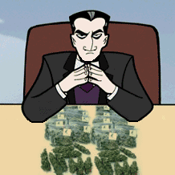
Недавно мои товарищи по группе отправились в гости к спонсорам. Вернее, не к спонсорам, а к спонсорше - молодой симпатичной женщине. Она оказалась ценительницей современного искусства и по какой-то ошибке пустила к себе в дом этих сорванцов. Сам я в то время был в отъезде, так что присоединиться к ним не смог. А то бы, конечно, не допустил такого беспредела, который учинили мои коллеги. Вначале они набухались. Потом один из них скрутил здоровенный джойнт и пустил его по кругу. Сосед слева вежливо отказался. «Не могу, - сказал он. - Я политик. У нас не принято». «Кури», - глядя ему в глаза, твердо сказал мой коллега-пэгэшник. И политик спасовал. Он закурил и сразу же обкурился. А обкурившись, потерял дар речи. Молчал целый час, пока мои коллеги, как всегда, глупо шутили и дико ржали. Потом пришел в себя и сказал спонсорше: «Надо же, какая ты добрая. Таких к себе интересных людей приглашаешь...» «А ты чо не добрый?» - тут же навострил уши мой коллега-пэгэшник. «Нет, что вы, - грустно ответил политик. - Как я могу быть добрым? У нас это не принято...» «А раз не принято, - ответил пэгэшник, - то и иди отсюда. Тут только добрые собираются!» И лягнул его, видимо, в невменозе почувствовав себя хозяином дома. Политик тихо собрался и ушел. А наглецы-пэгэшники продолжали глупо шутить и дико ржать над собственными шутками.
Дня через два, когда я вернулся, мы все вместе зырили телик. Как обычно, дули и ржали. Но вдруг в воздухе зависла неприятная пауза. Коллеги оторопело тыкали в телик пальцами. Только мычали, вместо слов выпуская клубы дыма. Ведь в телике очутился тот самый политик. Оказалось, что это не просто политик, а помощник самого презика. Через минуту все снова надрывались от хохота. А я подумал: «Надо всем миром накуриться и выгнать из наших стран всех этих политиков. На хуй пинками. Вот будет классно. Просто ахуйно!» Но тут я снова затянулся и забыл, о чем думал. Йо-йо.
19.06.05 Чуваки!
Конкурс закончился, но все равно присылайте свои рэпаки! Мы собираем книжку рэп-заморочек, куда войдут лучшие из ваших строчек! Короче, ждем реальных тем, а никаких-то суходрочек!!! Тока шлите не в конкурс свою немуру, а на адрес на pgkatala@mtu-net.ru.
15.09.04 ПИТЕКАНТРОП В ЕКАТЕРИНБУРГЕ
или о том, как некоторые московские художники улучшают облик других городов
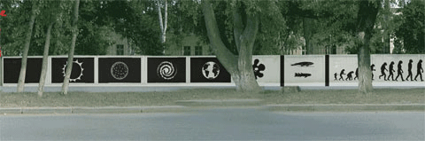
Все начиналось хорошо. Приехали мы в фирменном поезде, разместили нас в отдельных номерах в главной гостинице города «Большой Урал», в самом центре прямо напротив Университета. По случаю нашего приезда в Государственном центре современного искусства накрыли стол. Самая красивая девушка-сотрудница томно вздохнула и сказала: «Корифеи приехали». Остальные девушки старательно перелистывали номера нашего журнала ПГ, которые лежали у каждой на столе. Это, правда, показалось мне немного странноватым - журнал-то вышел уже лет пять назад, неужто все эти годы они только его и читают. Однако, увлеченный общением с поклонницами, я тут же отогнал прочь это недостойное подозрение. Девушки из местной художественной группы восторженно рассказывали, как ездили в Москву на нашу выставку в Третьяковку. На выставку их, правда, не пустили бабки-смотрительницы. Бабки, оказывается, называли наше гениальное произведение порнографией. Они настолько крепко сидели перед дверью в зал, что пробиться туда было попросту невозможно. Но не беда, сегодня, наконец, встреча с нами, а, значит, и с нашим искусством состоялась./читать дальше/
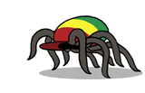
15.08.04 РАСТА-ПАУК
Шел я как-то по улице, и тут на меня сверху вдруг прыгнул раста-паук. Когда дым рассеялся, я много чего понял. Например, что нужно о пауке этом рассказать. И сделать сайт.
12.08.04 МЫ И ОНИ
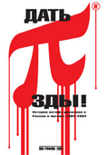
Мы - это реперки, растаманчики, панчки, пидорки, жидки, хачики, нигерки и прочие мрази. Они - это все остальные. Те, кто считают нас другими. То есть фашики. А с фашиками у нас разговор короткий. Про то, какой он, этот разговор, читайте книжку «Дать пизды». Купить ее можно в небольших книжных магазах, вроде «Оги», «Адмаргинема», «Фаланстера» и т.д .
|
Наверх | Читать дальше
|
|